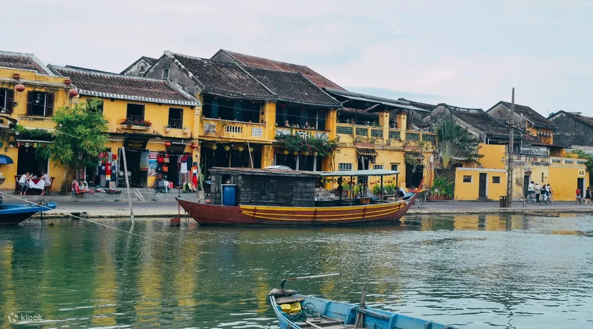

Các địa điểm du lịch Đà Nẵng nổi tiếng
Đà Nẵng, thành phố đáng sống nhất Việt Nam, có gì đặc biệt khiến hội cuồng chân mê mẩn? Cùng Klook khám phá những địa điểm du lịch Đà Nẵng nổi tiếng bạn không thể bỏ qua trong hành trình sắp tới.
1. Công Viên Nước Nóng Mikazuki 365 Đà Nẵng

Công Viên Nước Nóng Mikazuki 365 Đà Nẵng ra mắt vào cuối năm 2020 và nhanh chóng chiếm được cảm tình từ đông đảo #teamKlook, nhờ vào danh hiệu “công viên nước nóng trong nhà đầu tiên tại Việt Nam”. Trải rộng trên tổng diện tích hơn 10 héc-ta, hành trình ở Công Viên Nước Nóng Mikazuki 365 Đà Nẵng là trải nghiệm vui chơi, giải trí kết hợp chăm sóc sức khoẻ trọn vẹn, rất phù hợp cho #teamKlook đi du lịch Đà Thành cùng nhóm bạn hoặc gia đình đông thành viên. Bên cạnh khu vực Onsen “chuẩn Nhật Bản”, Mikazuki 365 Đà Nẵng còn sở hữu các đường trượt nước đầy màu sắc và bể tạo sóng nhân tạo hấp dẫn. Tất nhiên, không thể nào bỏ qua các món ngon Nhật Bản được chế biến tỉ mỉ tại những nhà hàng bên rong khuôn viên khu vui chơi. Giá vé Công Viên Nước Nóng Mikazuki 365 Đà Nẵng tham khảo đang ở mức từ 210.000đ/khách. Bạn nên mua vé trải nghiệm kèm bữa ăn và dịch vụ tắm Onsen để có hành trình hoàn hảo nhất nhé.
2. Phố Cổ Hội An
Toạ lạc ở hạ lưu sông Thu Bồn, Phố Cổ Hội An nằm cách trung tâm thành phố Đà Nẵng khoảng 30km về phía Nam. Nơi đây từng là một thương cảng sầm uất vào nửa cuối thế kỷ XVI, là nơi lui tới thường xuyên của các thương lái người Nhật và người Hoa. Dù ít nhiều đã thay đổi sau khi bị chiến tranh tàn phá, dấu ấn văn hoá, tôn giáo, nghệ thuật hằng trăm năm dường như vẫn còn tồn tại rõ nét tại khu phố dịu dàng này. Vi vu Phố Cổ Hội An, bạn đừng bỏ lỡ những địa điểm du lịch nổi tiếng như Chùa Cầu Nhật Bản, Hội Quán Triều Châu, Nhà Cổ Phùng Hưng, Nhà Thờ Tộc Trần, Bảo Tàng Văn Hoá Lịch Sử… Trải nghiệm đi thuyền trên sông Hoài và thả hoa đăng cũng rất được #teamKlook yêu thích. Đừng quên tự thưởng cho bản thân một đĩa cơm gà Hội An chất lượng nhé!
3. Rừng Dừa Bảy Mẫu Hội An

Rừng Dừa Bảy Mẫu còn được biết đến với tên gọi “Rừng Dừa Cẩm Thanh” hoặc “miền Tây thu nhỏ giữa lòng Hội An”. Đến với địa điểm du lịch gần Đà Nẵng tràn đầy sắc xanh này, bạn có cơ hội khám phá hệ sinh thái rừng ngập mặn ven biển đa sắc màu, chèo thuyền thúng bồng bềnh giữa những hàng dừa phát triển cao vút, thưởng thức nhiều món ngon từ dừa và rinh về nhà quà lưu niệm đáng yêu. Nếu muốn tìm hiểu xem thiên nhiên Hội An có thể rực rỡ như thế nào thì đừng quên ghé thăm Rừng Dừa Bảy Mẫu nhé!
4. Sông Hàn Đà Nẵng

Đi du lịch Đà Nẵng mà được “chill” trên sông Hàn êm ả, lắng nghe nhạc sống và chiêm ngưỡng thành phố lúc lên đèn thì còn gì sung sướng bằng? Hành trình dạo chơi trên sông Hàn Đà Nẵng có thể đưa bạn đi qua những cây cầu nổi tiếng nhất thành phố, đơn cử như Cầu Quay Sông Hàn, Cầu Trần Thị Lý, Cầu Thuận Phước và Cầu Rồng. Đặc biệt, tại Cầu Rồng Đà Nẵng còn có tiết mục biểu diễn phun lửa và phun nước đặc sắc vào 21h00 thứ Bảy và Chủ Nhật hàng tuần nữa đấy. Đừng bỏ lỡ nhé.
5. Show Diễn Nghệ Thuật Truyền Thống Hồn Việt Ở Đà Nẵng

Xây dựng trên nền tảng nghệ thuật Tuồng xứ Quảng, Show Diễn Hồn Việt mang đến góc nhìn sâu sắc về nét đẹp truyền thống Việt Nam và vùng Quảng Nam - Đà Nẵng. Qua chương trình kéo dài 60 phút, khán giả sẽ được thưởng thức những trích đoạn Tuồng kinh điển và chiêm ngưỡng nghệ thuật hoá trang độc đáo của bộ môn nghệ thuật này, trong giai điệu trầm hùng của dàn nhạc dân tộc Việt Nam. Đây sẽ là cách tuyệt vời để giới thiệu văn hoá Việt Nam đến bạn bè quốc tế đấy, #teamKlook có đồng ý không?